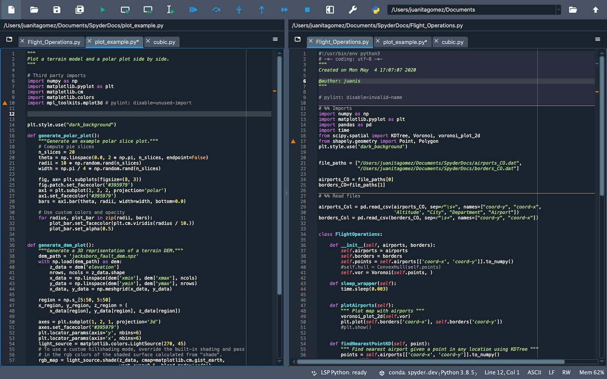
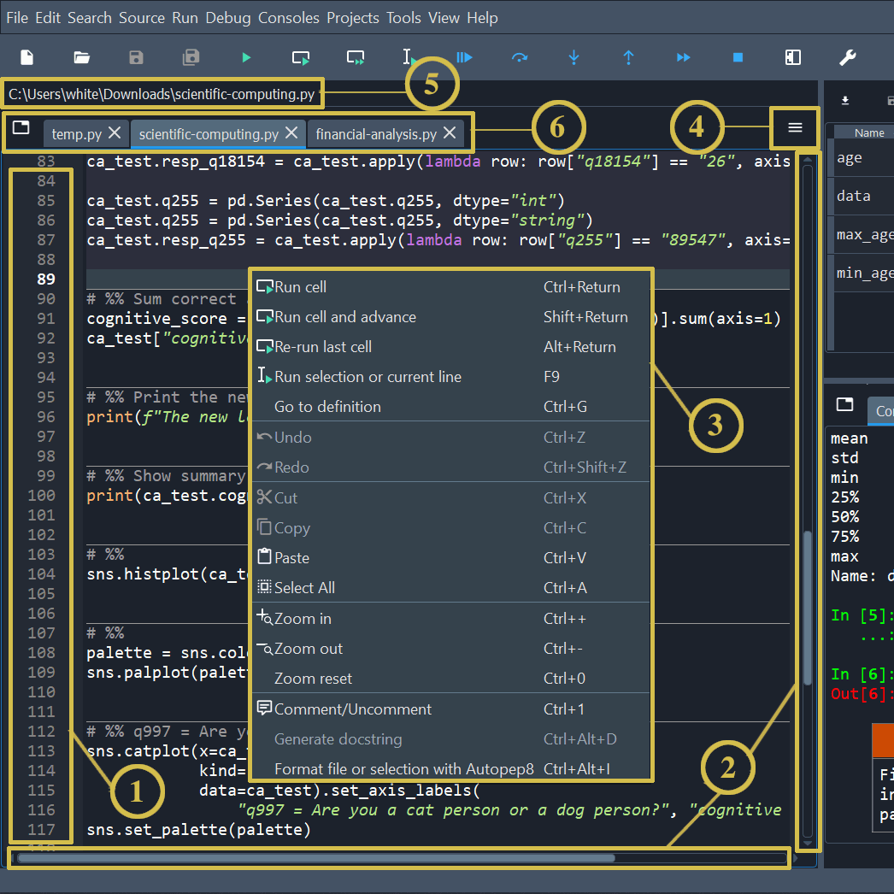
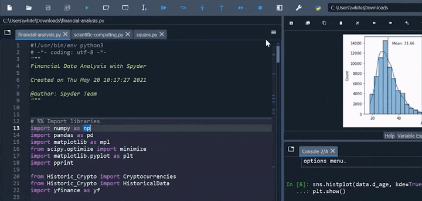
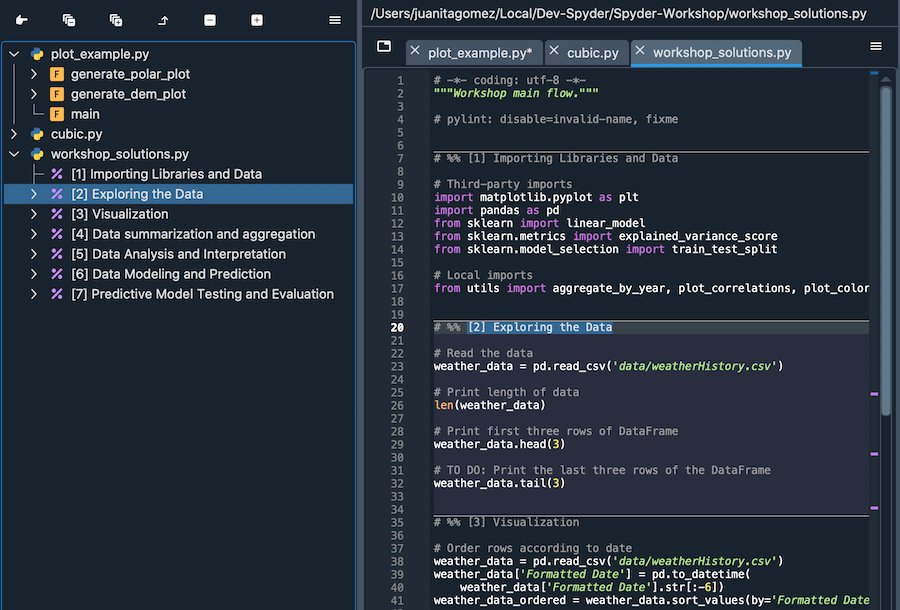
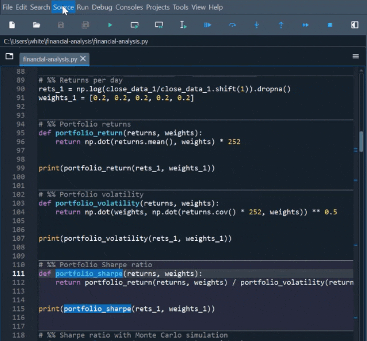
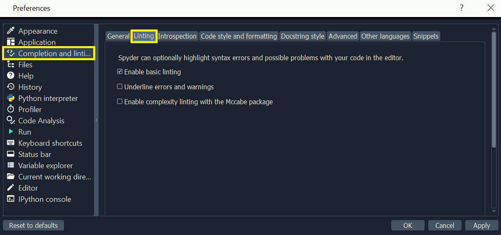
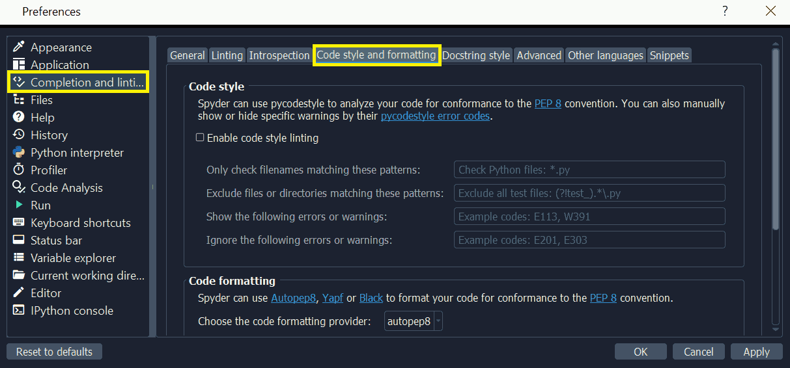
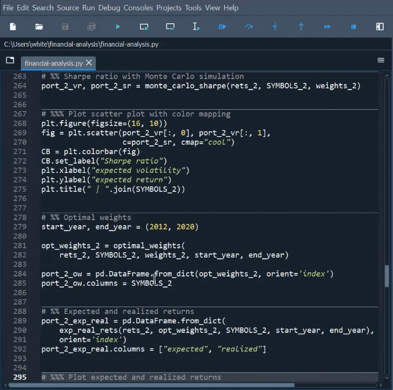

Editor#
Spyder’s multi-language Editor pane is the key element of the IDE, where you can create, open, and modify source files. The Editor offers a variety of core features, such as autocompletion, real-time analysis, syntax highlighting, horizontal and vertical splitting, and much more. In addition, it integrates a number of powerful tools for an easy to use, efficient editing experience.
Key components#
The Editor pane consists of the following areas:
The left sidebar shows line numbers and displays any code analysis warnings that exist in the current file. Clicking a line number selects the text on that line, and clicking to the right of it sets a breakpoint.
The scrollbars allow vertical and horizontal navigation in a file.
The context (right-click) menu displays actions relevant to whatever was clicked.
The options menu (“Hamburger” icon at top right) includes useful settings and actions relevant to the Editor.
The location bar at the top of the Editor pane shows the full path of the current file.
The tab bar displays the names of all opened files. It also has a Browse tabs button (at left) to show every open tab and switch between them—which comes in handy if many are open.
Interface#
Tabs#
You can browse and navigate between open files in the Editor with tabs. Click the Browse tabs button on the left of the tab bar to display a list of open files, with the active tab checked.

Reorder files by dragging and dropping, or with Sort tabs alphabetically in the options menu, which also allows closing all tabs to the right of, or all tabs but the active one.

File switcher#
The Editor features a file switcher, which enables you to navigate and switch between multiple open files. The file switcher is helpful for locating any file when there are several files opened.

It can be accessed from the menu or Ctrl-P, and includes a search function. You can type in any part of an open file’s name and—if exists—it can be switched to by pressing Enter.

Split panels#
The Editor can be split horizontally and vertically into as many distinct panels as desired. This allows viewing and editing the contents of several files (or different parts of the same file) at the same time.
Split the Editor with the Split vertically (Ctrl-Shift-{) and Split horizontally (Ctrl-Shift--) commands in the options menu, and use Close this panel (Alt-Shift-W) to close the selected split panel.
Note
closes a split panel, while hides the entire Editor pane (including all splits, which are restored when the Editor is re-opened).
Editing features#
Syntax highlighting#
To improve the readability of your code, Spyder has a syntax highlighting feature that determines the color and style of text in the Editor, as well as in the IPython Console.
You can configure and preview syntax highlighting themes and fonts under . The Syntax highlighting theme section allows you to change the color and style of the syntax elements and background to match your preferences. You can switch between available themes in the drop-down menu, modify the selected theme, create a new theme, and more. The Fonts section lets you change the text font and size.

Note
Changes made to the syntax highlighting theme and font settings are common to all source files, regardless of their language.
Code cells#
A “code cell” in Spyder is a block of lines, typically in a script, that can be easily executed all at once in the current IPython Console. This is similar to “cell” behavior in Jupyter Notebook and MATLAB. You can divide your scripts into as many cells as needed, or none at all—the choice is yours.
You can separate cells by lines starting with either:
# %%(standard cell separator), or# <codecell>(IPython notebook cell separator)
Providing a description to the right of the separator will give that cell its own name in the Outline.
You can also create “subsections” by adding more % signs to the cell separator, e.g. # %%% to create a level 2 subsection, # %%%% for level 3, etc.
This displays multiple levels in the Outline pane.
Note
This only affects how the cell is displayed in the Outline, and doesn’t affect running it in the Editor.
To run the code in a cell, use , the Run cell button in the toolbar or the keyboard shortcut (Ctrl-Enter/Cmd-Return by default). You can also run a cell and then jump to the next one, letting you quickly step through multiple cells, using (Shift-Enter by default).
Automatic formatting#
The Editor has built-in support for automatically formatting your code using several popular tools, including Autopep8 and Black. The Format file or selection with {tool} command in the Source or context menu will format either the selected fragment (if text is selected) or the entire active file.

You can have the Editor automatically autoformat a file every time you save your work. To set this up, go to and check the Autoformat files on save option.

Running code#
The Editor lets you run an entire file as well as specific lines, selections or cells.
As your code is running,
The IPython Console will display output and errors.
The Variable Explorer allows you to browse and interact with the objects generated.
The Plots pane renders the figures and images created.
Run file#
Run an entire Editor file using the menu item, the Run file toolbar button or the F5 key. Use to re-run the most recent file executed with the above.
Run line/selection#
You can execute the current line—or multiple selected lines—using the Run selection or current line option from the toolbar or the menu, as well as with the F9 key. After running the current line, the cursor automatically advances to the next one, so you can step through your code line by line. Unlike Run file, the executed lines are shown in the IPython Console.
Run cell#
To run a cell, place your cursor inside it and use the menu item, the Run current cell toolbar button or the Ctrl-Enter / Cmd-Return keyboard shortcut. Use Run cell and advance in the Run menu/toolbar or Shift-Enter to jump to the next cell after running, useful for stepping through cells quickly.
Run configuration#
You can use the Run configuration per file dialog to set each file’s working directory, console mode (current, dedicated or external), command line arguments, execution options (clear all variables, run in an existing/empty namespace, debug on error), and more.

To access it, click or press Ctrl-F6 / Cmd-F6.
Code navigation#
Find and replace#
To search for text in the current file, use or Ctrl-F / Cmd-F, and to replace it, use or Ctrl-R / Cmd-R.
Typing your search string in the resulting panel below the Editor highlights each result and counts the total.
Navigate between matches with the Find Previous and Find Next buttons in the find/replace panel, their corresponding entries in the Search menu, or use the F2 and F3 keys.
Use the .* button to process search text as a regular expression, Aa to treat it as case-sensitive and [–] to only match whole words (e.g. for data, match data() but not dataframe).

Go to line#
The Go to line dialog allows jumping to a specific line in the active file. Open it with or Ctrl-L / Cmd-L, type the line number you want to scroll to and press Enter (or click OK).

It also shows the current line number and total line count in the file.
Class/function selector#
This panel, activated under , displays (as applicable) the name of the cell, function/method and class the Editor cursor is located inside. Use its dropdowns to view and jump to the functions, methods and classes in the current file.
Code analysis and completions#
Spyder uses the Language Server Protocol (LSP) to provide code completion and linting for the Editor, similar to VSCode, Neovim, and other popular editors/IDEs.
Note
Many issues with completion and linting are outside of Spyder’s control, and are either limitations with the LSP or the code that is being introspected, but some can be worked around. See Completion/help not working for troubleshooting steps.
Python is supported out of the box, and advanced users can add completion and linting support for other languages by setting up LSP servers for them under .
Code completion#
Automatic code completion as you type is enabled by default in the Editor, and can also be triggered manually with Ctrl-Space/Cmd-Space, showing you possible completions (with pop-up help for each) and available code snippets.
For example, typing cla will display the keyword class, the decorator classmethod and two built-in snippets with class templates.
Select the desired completion with the arrow keys and Enter, or by double clicking.

You can enable or disable on-the-fly code completion, as well as modify when it is triggered and what results are shown, under . Spyder also allows you to define custom completion snippets to use, in addition to the ones offered by the LSP, under .
Linting and code style#
Spyder can optionally highlight syntax errors, style issues, and other potential problems with your code in the Editor, which can help you spot bugs quickly and make your code easier to read and understand.

The Editor’s basic linting, powered by Pyflakes, warns of syntax errors and likely bugs in your code. It is on by default, and can be disabled or customized under .
Code style analysis, powered by Pycodestyle, flags deviations from the style conventions in PEP 8. It is not active by default, but you can enable it and customize the Pycodestyle error codes shown with the options under .
Introspection features#
If there’s a function, class or variable for which you would like to check its definition, you need to Ctrl/Cmd-click its name in the Editor (or click its name and press Ctrl-G / Cmd-G to jump to the file and line where it is declared.
You can hover over the name of an object for pop-up help, as described in the Help pane docs.

Finally, if you type the name of a function, method or class constructor and then an open parenthesis, a calltip will pop up which shows the function’s parameters as you type them, as well as a summary of its documentation. These features can be enabled and customized under .
Keyboard shortcuts#
To view the Editor’s primary keyboard shortcuts, consult its section under . The full list can be browsed, searched and customized (on double-click) in .